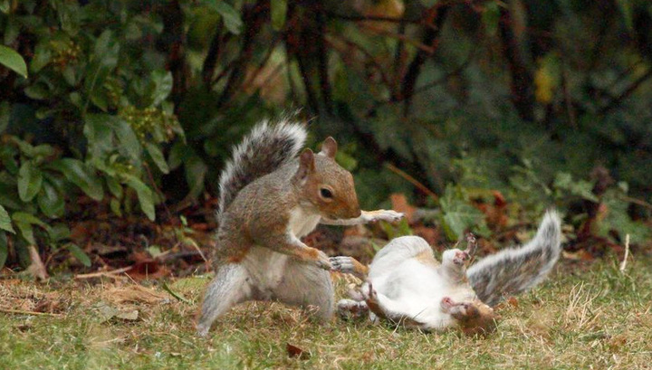

Бе́лки (лат. Sciurus) — род грызунов семейства беличьих.
Кроме собственно рода Sciurus, белками называют ещё целый ряд представителей семейства беличьих из родов красные белки (Tamiasciurus), пальмовые белки (Funambulus) и многих других. Что касается собственно рода Sciurus, то он объединяет в себя около 30 видов, распространённых в Европе, Северной и Южной Америке и в умеренном поясе Азии.
